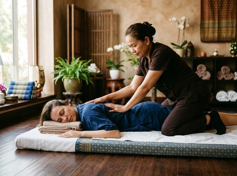
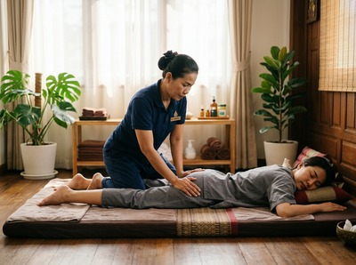

★★★★★ Quality gate failures: readability | paragraphs. Review and edit before removing this notice. ★★★★★
★★★★★ Quality gate failures: readability | paragraphs. Review and edit before removing this notice. ★★★★★
If you train regularly, sit at a desk all day, or simply push your body harder than it can comfortably recover from, the question is rarely whether injury will happen.
It's when. Proactive injury prevention through massage therapy is one of the most effective and underused strategies available, helping you stay active, mobile, and pain-free before problems take hold. At Serendipity Massage Therapy & Wellness on Hope Street in Glasgow city centre, we work with clients specifically on this: addressing the physical imbalances, tightness, and restricted movement that quietly set the stage for injury.
Injury prevention means finding and fixing risk factors in the body before they cause harm. In musculoskeletal terms, sports and movement-related injuries most often result from overuse, poor tissue flexibility, muscle imbalance, and poor recovery.

These are not freak events. They build slowly through accumulated strain, and the body gives warning signals long before something tears or breaks down.
Tight muscles restrict joint range of motion. Restricted joints change how you move. Altered movement puts too much load on structures not built to carry it. Left alone, that chain of problems ends in injury. The good news is that each step in that chain can be treated with the right therapy.
Research published in Sports Medicine (Weerapong et al., 2005) found that massage puts pressure on soft tissue, increasing muscle flexibility, reducing stiffness, and improving joint range of motion. These are the exact conditions that lower injury risk. The study also found reductions in cortisol and improvements in the body's rest state — both of which help tissue repair and adapt.

Thai massage uses assisted stretching and sustained pressure along sen energy lines. It suits injury prevention well because the stretching lengthens muscles and connective tissue steadily. There is none of the risk that comes from aggressive self-stretching. Sports massage uses deep-pressure work on specific muscle groups to address trigger points and chronic tension that restrict movement and create strain elsewhere.
Swedish massage supports recovery through better circulation and less post-exercise soreness. Regular sessions across any of these treatments build lasting benefit. Tissues become more flexible, range of motion increases, and the body handles physical demand better over time. You can book your first session online and discuss your activity level and areas of concern with your therapist before you begin.
Sessions begin with a short conversation about your activity, lifestyle, and where you notice tightness or restriction. Your therapist will then tailor the session to those patterns, drawing from our treatments including traditional Thai massage, sports massage, and Thai oil massage. Every therapist at Serendipity is trained to the same standard developed by head therapist Jariya Malone. The quality of assessment and technique is consistent regardless of who you see.
Our studio is in Central Chambers, 93 Hope Street, a short walk from Buchanan Street and St Enoch subway stations. If you are managing a heavy training load or physically demanding work, we encourage regular appointments rather than one-off visits. The benefit of massage builds with consistency, and your therapist will help you find a schedule that fits. Book online to get started.
Injury prevention massage is relevant to more people than most expect. Runners building mileage, gym-goers increasing load, cyclists held in fixed positions for hours, office workers in Glasgow's financial district sitting for eight-plus hours a day, manual workers lifting and carrying, and new parents bending, carrying, and sleeping badly — all of them are at risk.
If your body is under regular physical demand and recovery is not keeping pace, a regular session at Serendipity is one of the most practical steps you can take.
For most active people, a session every two to four weeks is enough to keep tissue flexible, support recovery, and catch tightness before it becomes a problem. If you are in a heavy training block or doing physically demanding work, monthly sessions at minimum are worth building in. Your therapist at Serendipity can suggest a schedule based on your activity level and how your body responds.
Research supports both roles, but the case for prevention is strong. A study in Sports Medicine found that massage reduces muscle stiffness and improves joint range of motion — both direct risk factors for injury. Regular massage keeps the body in a state that is less prone to the strains and tears that follow from chronic tightness and restricted movement.
Sports massage and traditional Thai massage are the most focused options for injury prevention. Sports massage targets areas of tension and trigger points that affect how you move. Thai massage combines assisted stretching with pressure work to improve flexibility and joint mobility. Swedish massage is a strong addition for circulation and recovery. At Serendipity, your therapist will suggest the right treatment based on your lifestyle and goals.
Yes. Injury risk is not limited to sport. Desk workers, manual workers, parents of young children, and anyone with a physically repetitive routine build up strain just as athletes do. Sitting for long periods creates its own pattern of tightness and imbalance that massage addresses directly. You do not need to be training for anything to benefit from keeping your body mobile and in good shape.
The focus depends on your lifestyle and the tension patterns your therapist finds. Common areas include the hip flexors and hamstrings in runners, the upper back, neck, and shoulders in desk workers, and the lower back and glutes in anyone who sits or stands for long periods. Your therapist will assess these patterns at your first session and adjust the focus as your body changes over time.
The aim and technique differ. A relaxation massage, such as Swedish, focuses on calming the nervous system and softening muscles generally. An injury prevention session is more targeted — your therapist works on specific areas of restriction, imbalance, or overload found through assessment. At Serendipity, both approaches have real value, and your therapist can blend them based on what your body needs on any given day.